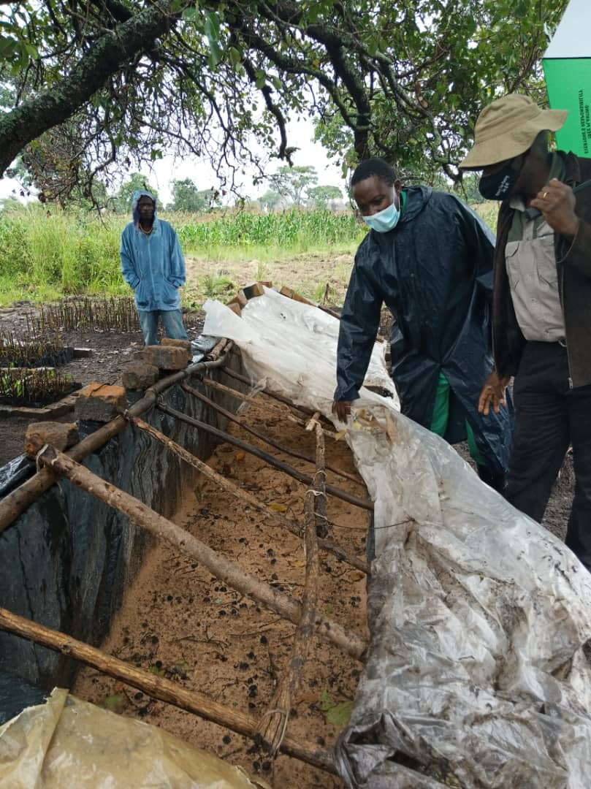
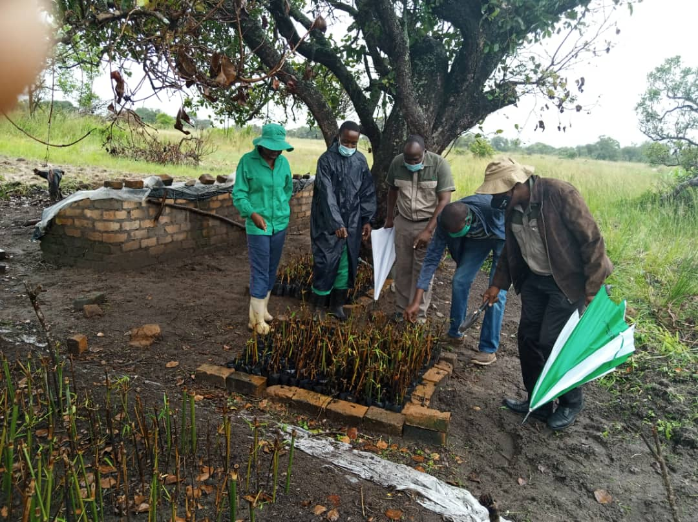
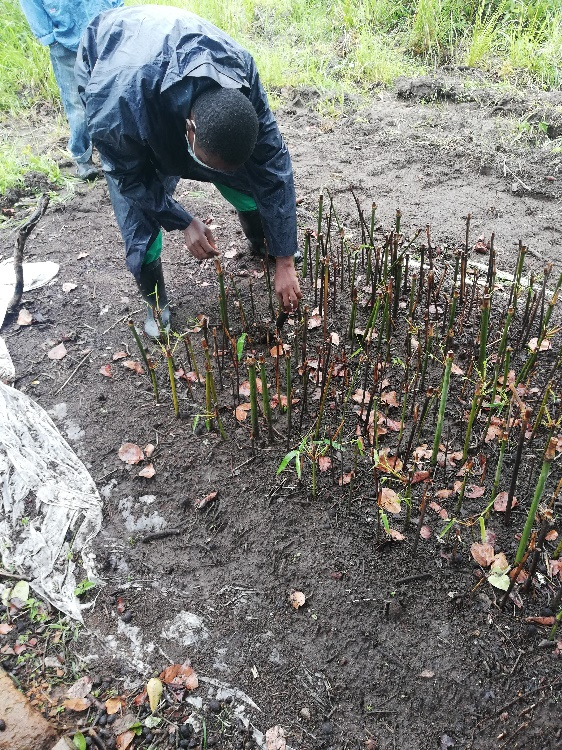

Background & Purpose of the Visit
The Forestry Research Centre (FRC) team visited the Bamboo Zimbabwe nursery to assess current operations, propagation progress, and to establish a working relationship between BZ and government researchers.
The Bamboo Zimbabwe Nursery is situated in Mazowe District and currently operates from Barwick G Farm — a plot held by Mr. T. Chidhawu following the land reform programme. Barwick G Farm is located a few kilometres from Blackfordby College of Commercial Agriculture, providing proximity to agricultural infrastructure and expertise.
The aim of the visit was to familiarise the FRC team with the Bamboo Zimbabwe nursery, understand current nursery operations, and survey any other work being done in the country. The visit formed part of a broader effort to connect BZ's field-based propagation experiments with formal forestry research capacity.
What the Team Found on the Ground
The visiting team conducted a thorough walk-through of the nursery, assessing structures, stock levels, and the condition of propagation materials. The following observations were recorded:
- The nursery is still in its infancy — Bamboo Zimbabwe has begun experimental propagation of bamboo species found in Zimbabwe, establishing a foundational base for future expansion.
- Nursery infrastructure includes a propagation and cuttings sand bed, and several open cuttings rooting beds — the essential structures for vegetative bamboo propagation.
- Nursery stock pricked out and potted: approximately 950 small pocketed rooted cuttings — a meaningful initial quantity for an early-stage operation.
- Cuttings are at various levels of success: some show vigorous shoot development, some are actively developing roots, and some appear dormant at first impression — but uprooting reveals active underground shoot development.


"Some cuttings appear dead at first impression — but after uprooting, you find them shooting. This is characteristic of bamboo propagation and shows the team's materials are alive and progressing."
The physical setup — sand beds, rooting beds, and pocketed cuttings — demonstrates that Bamboo Zimbabwe has correctly identified and implemented the key structural requirements for vegetative propagation. The variety of developmental stages across the 950+ stock units reflects the experimental nature of the programme and the learning embedded in it.
Assessment & Key Findings
The FRC team's assessment was broadly positive — Bamboo Zimbabwe has achieved real propagation success, but the path to institutional impact requires documentation and replication.
There is demonstrable success with propagation of the bamboo species specimens collected so far. Bamboo Zimbabwe has done good foundational work on the experiments. However, a critical gap remains: the experience and methodology has not been formally documented. Without documentation, successful techniques cannot be reliably replicated — either at the BZ nursery itself, or at other research stations across Zimbabwe.

Close-up inspection of an open rooting bed — branch cuttings planted vertically show vigorous upright shoots emerging from the soil. This demonstrates the propagation success the FRC team observed first-hand at the Barwick G Farm nursery.
The FRC team identified a clear need for the nursery work to be formalised through collaboration with forestry researchers. This would allow the adoption of experimental designs that produce publishable, replicable results — converting field learning into institutional knowledge.
"Bamboo Zimbabwe has done some good work on the experiments — however, there is still a need to document their experience so that the work can be replicated elsewhere."
The visit also highlighted the proximity of the nursery to Blackfordby College of Commercial Agriculture as a potentially underutilised resource. Collaboration with the College and with the Forest Research Station in Harare could accelerate progress significantly.
FRC Team Recommendations
The visiting team identified four priority actions for Bamboo Zimbabwe and the FRC to pursue in follow-up to this visit:
Nursery registration and standards compliance. While formal nursery registration may be cost-prohibitive at this stage, nursery standards established by the Zimbabwe Forestry Commission must be followed to minimise disease spread. Specifically: propagation beds should be lined with plastic or constructed with brick and cement mortar plastering.
Documentation of nursery work. All propagation work needs to be formally documented. Where possible, the team should work with FRC researchers to design simple experimental frameworks that can generate replicable, peer-reviewed results — converting hands-on learning into transferable knowledge.
Replication of successful results. The propagation successes achieved to date need to be replicated in controlled settings — preferably at the Forest Research Station in Harare and at Nzvimbo Forest Nursery — to validate results and prepare for scale.
Establishment of experimental demonstration plots. Work to establish field plots of the successful cuttings at the farm under experimental conditions. The FRC team will develop the experimental design. These plots should be positioned to enable future promotional events — field days, media tours — to tell the story of Zimbabwe's bamboo success.
The Path Forward
From Experiment to Extension
Most of the work by Bamboo Zimbabwe is still at the experimental stage. The priority is to deepen the collaboration with FRC researchers so that the team produces finished, validated results that the Forestry Commission's Conservation and Extension division can then actively promote within national afforestation activities.
In the near term, the FRC team can assist by identifying farmers who can host demonstration experimental plots. Where possible, publicity and promotional events — including field days and media tours — should be held at these sites to build national awareness of Zimbabwe's bamboo success stories.
The visit to Bamboo Zimbabwe's nursery confirmed that real, tangible progress is being made at the grassroots level. What is needed now is the institutional bridge: connecting BZ's field expertise with formal research, documentation, and extension capacity — so that this progress can be amplified and replicated across Zimbabwe.